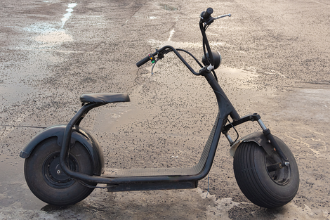
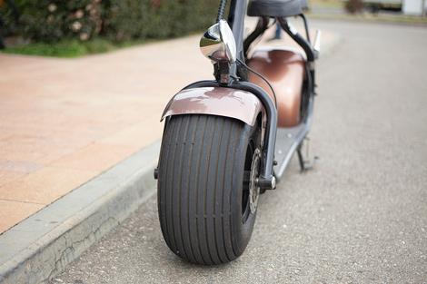

O futuro é elétrico: A revolução das motos elétricas!
Se você está procurando por uma maneira moderna e sustentável de se locomover, as motos elétricas são a escolha certa. Com a tecnologia em constante evolução, as motos elétricas estão se tornando cada vez mais populares em todo o mundo. E não é difícil entender o motivo: com sua aceleração rápida, potência instantânea e um baixo impacto ambiental, as motos elétricas são uma opção atraente para aqueles que procuram mobilidade prática e eficiente.
Mas as motos elétricas não são apenas uma moda passageira - elas são o futuro do mercado de motocicletas. Com governos em todo o mundo implementando políticas para reduzir as emissões de gases de efeito estufa e incentivar a mobilidade sustentável, é apenas uma questão de tempo até que as motos elétricas sejam a norma em nossas estradas.
E aqui está a melhor parte: a tecnologia por trás das motos elétricas está em constante evolução, o que significa que elas estão se tornando cada vez mais acessíveis e eficientes. Imagine poder desfrutar de uma mobilidade sustentável e de alta tecnologia, tudo isso sem sacrificar a emoção e a aventura de andar de moto.
Então, se você está procurando por uma maneira moderna e sustentável de se locomover, considere as motos elétricas como sua próxima escolha de transporte. Confira nosso site para saber mais sobre as motos elétricas e como elas estão mudando o futuro do mercado de motocicletas. O futuro é elétrico - e as motos elétricas estão liderando o caminho!

Sustentabilidade
As motos elétricas são uma opção ecologicamente correta em comparação com as motos movidas a combustível fóssil. Além de reduzirem a poluição do ar, as motos elétricas também ajudam a reduzir o impacto do aquecimento global, já que não emitem dióxido de carbono ou outros gases de efeito estufa. Com uma moto elétrica, você pode desfrutar de sua mobilidade sem sacrificar a saúde do planeta. Imagine fazer uma viagem sem precisar se preocupar com as emissões de gases nocivos ao meio ambiente? Isso é possível com as motos elétricas. Confira alguns exemplos de imagens e vídeos em nosso site que mostram como as motos elétricas podem ajudar a proteger o meio ambiente.
Economia
As motos elétricas são uma opção econômica em comparação com as motos a combustão, já que não precisam de combustível. Isso significa que você economiza dinheiro em combustível e manutenção, além de contribuir para a redução da poluição do ar. Com uma moto elétrica, você pode reduzir significativamente seus gastos com transporte. E o melhor de tudo, é que você pode carregar sua moto elétrica em uma tomada convencional, sem precisar gastar dinheiro com postos de combustível. Confira algumas imagens e vídeos em nosso site que mostram como as motos elétricas podem ajudá-lo a economizar dinheiro e a ter uma mobilidade sustentável.
Dezempenho
As motos elétricas são conhecidas por seu desempenho impressionante, com aceleração rápida e torque instantâneo. Com uma moto elétrica, você pode sentir a potência desde a primeira aceleração, sem precisar lidar com engrenagens e mudanças de marcha. As motos elétricas também são silenciosas, oferecendo uma experiência de pilotagem suave e confortável. E o melhor de tudo, é que você pode desfrutar de todo esse desempenho sem se preocupar com emissões de gases poluentes. Confira algumas imagens e vídeos em nosso site que mostram como as motos elétricas podem oferecer um desempenho emocionante e sustentável.
Conveniencia
As motos elétricas são silenciosas, exigem menos manutenção e podem ser carregadas em uma tomada convencional. Isso significa que você não precisa se preocupar com mudanças de óleo, filtros e outras manutenções constantes que as motos a combustão exigem. Além disso, você pode carregar sua moto elétrica em casa, no trabalho ou em qualquer outro lugar que tenha uma tomada, tornando-a extremamente conveniente para uso diário. Com uma moto elétrica, você pode desfrutar de uma mobilidade sustentável e prática. Confira algumas imagens e vídeos em nosso site que mostram como as motos elétricas podem oferecer conveniência e eficiência em sua vida diária.